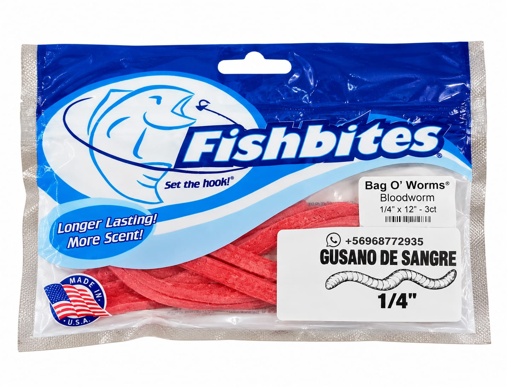
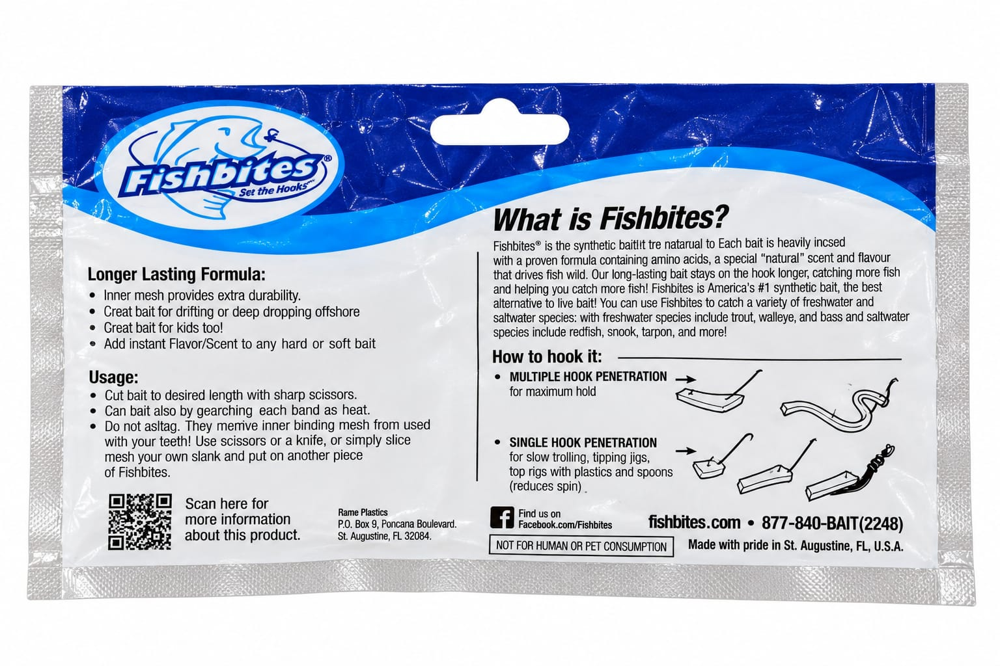
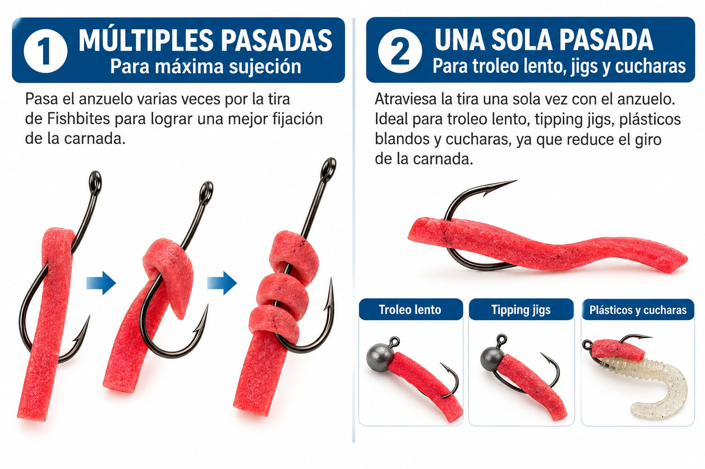

FISHBITES BAG O’ WORMS – BLOODWORM 1/4"
Carnada artificial de alta calidad diseñada para pesca en agua salada. Imita al gusano de sangre y libera aroma para atraer a los peces.Su fórmula de larga duración incorpora una malla interior que ayuda a mantener la carnada firme en el anzuelo, incluso durante múltiples lanzamientos.CARACTERÍSTICASMarca: FishbitesModelo: Bag O’ WormsTipo: Bloodworm (gusano de sangre)Medida: 1/4" × 12" (6,35 mm × 30,48 cm)Contenido3 tiras por envaseCARACTERÍSTICASFórmula: Longer Lasting (larga duración)Uso: Pesca en agua saladaFabricación: Estados UnidosPresentación: Bolsa resellableVENTAJASAroma incorporado para atraer peces.Excelente resistencia en el anzuelo.Se puede cortar al tamaño deseado.Fácil de utilizar y almacenar.Alternativa práctica a la carnada natural